Learn — 390px


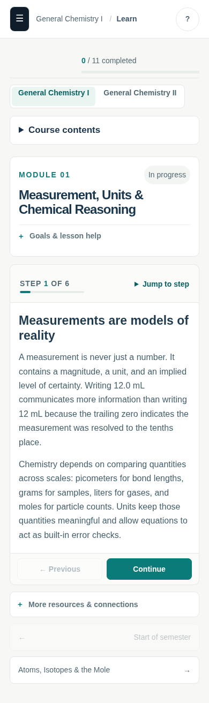
Before: readability + progress-integrity base 25d2268. After: Learn task-flow branch. Local Chromium, fixture/guest data, external requests blocked. Click captures for full resolution. Computed styles, overflow and axe results.
Mobile reading panel begins at y=564px, down from 605px. Learn content, checks and optional resources remain present. Account and menu screenshots show initial guest states; they do not certify every keyboard interaction.

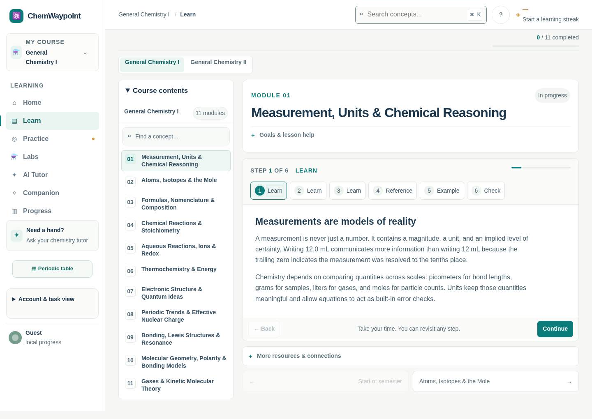

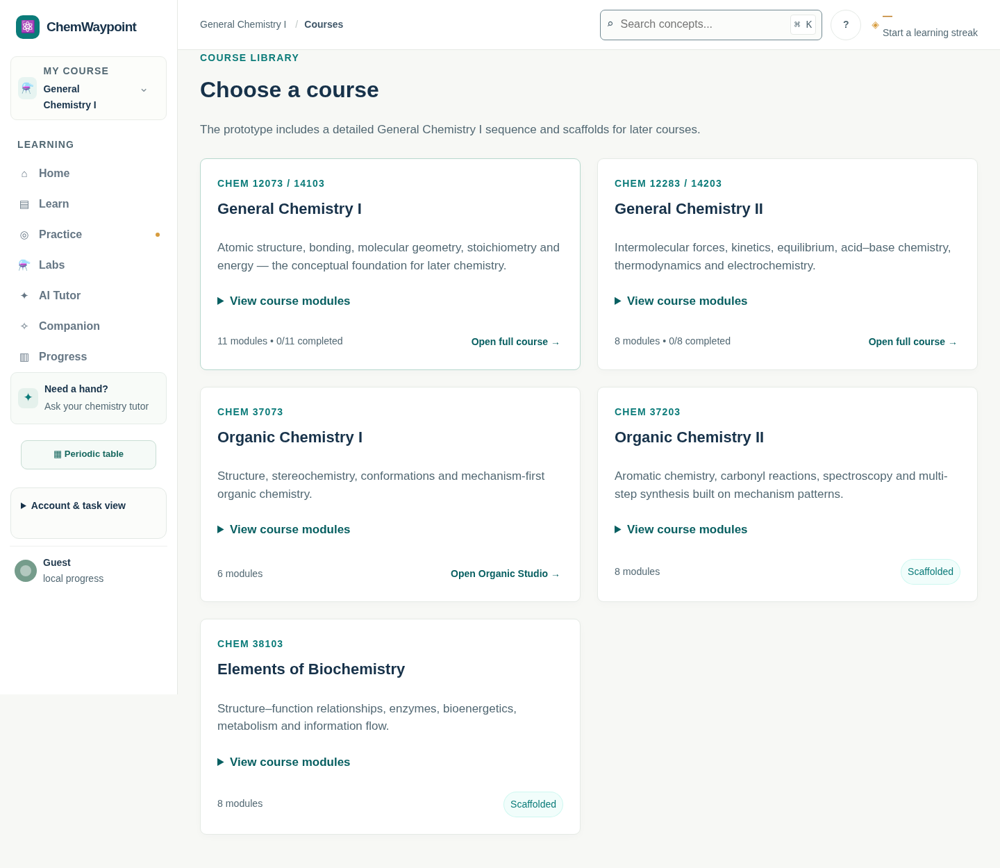
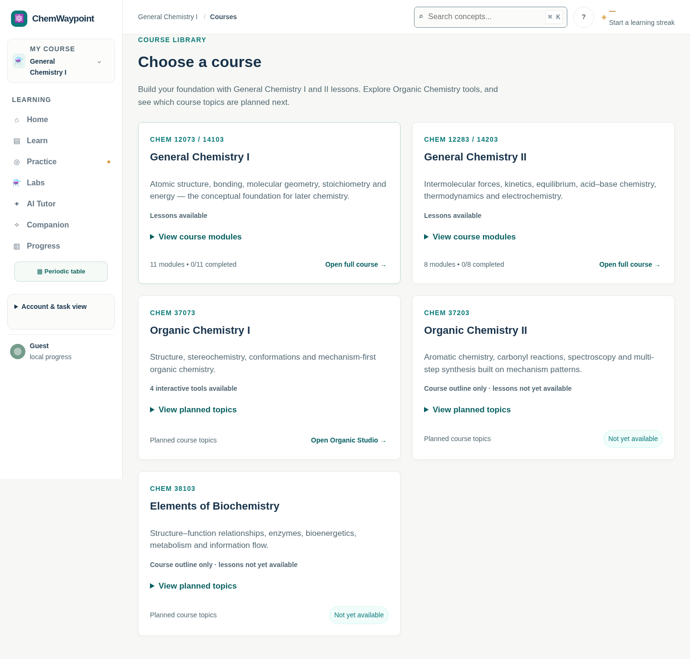
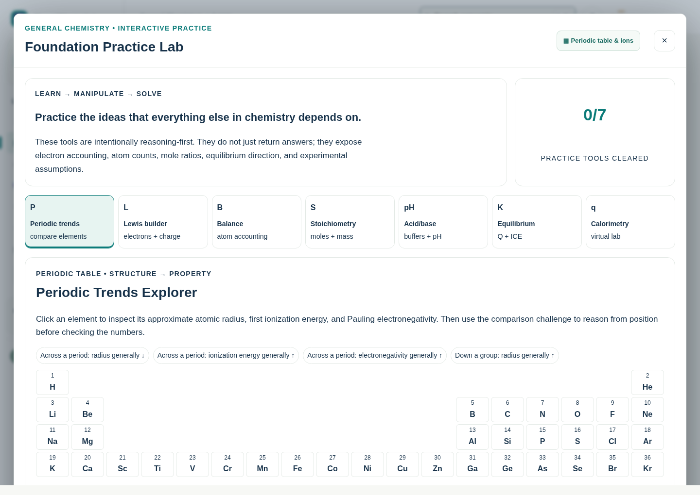
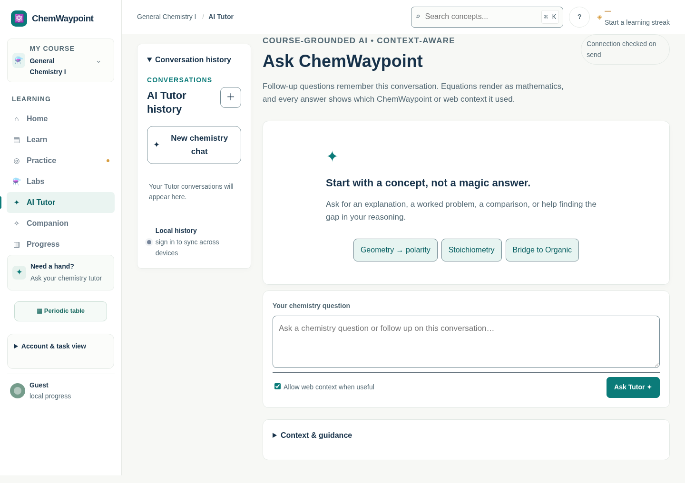
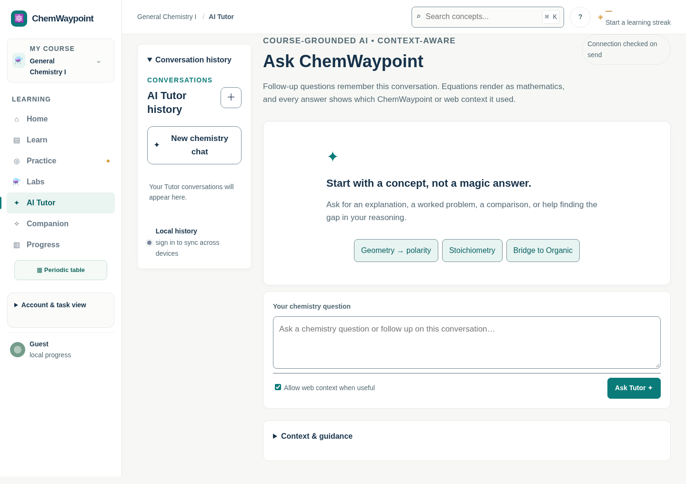
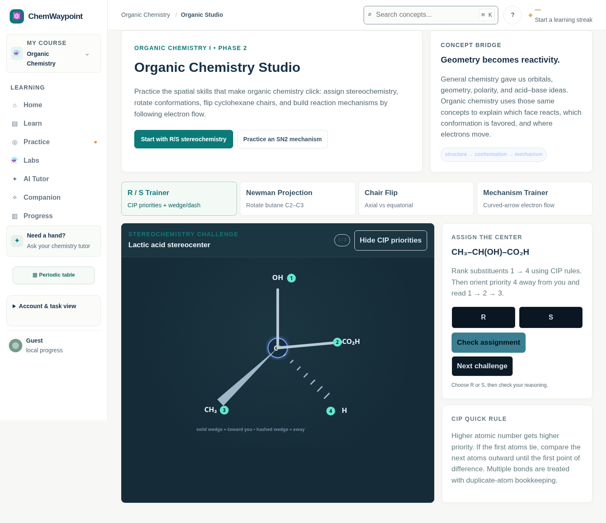
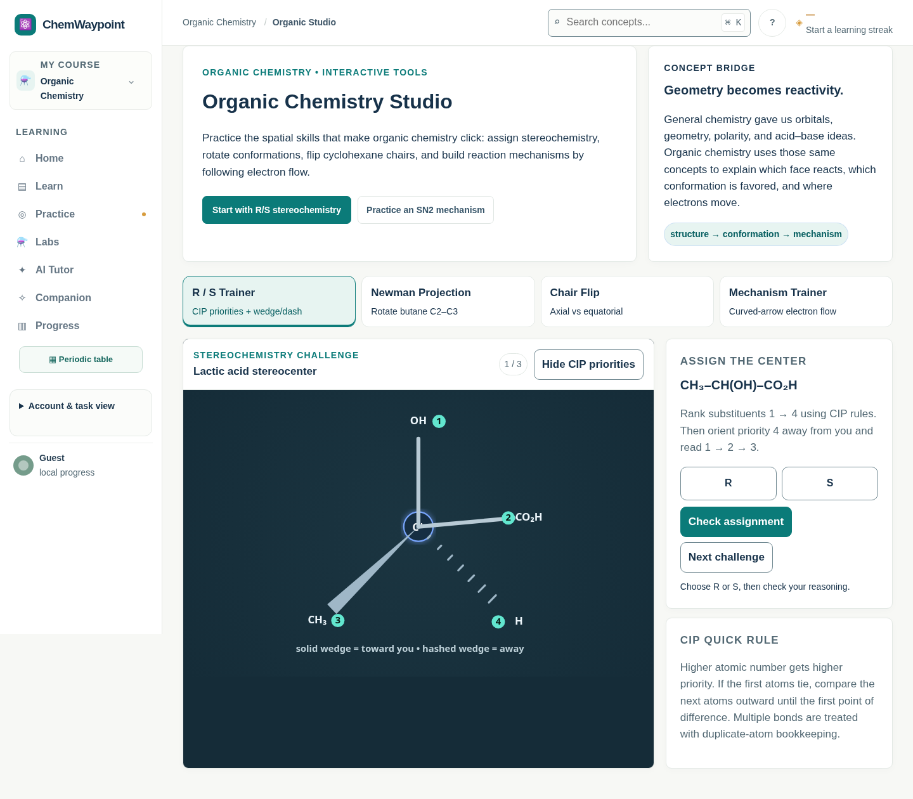
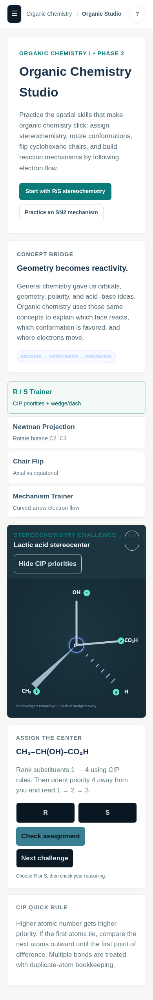
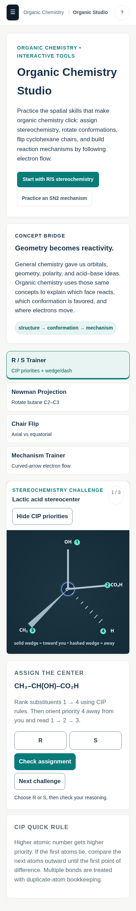
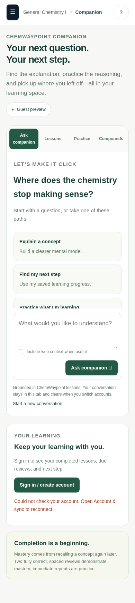
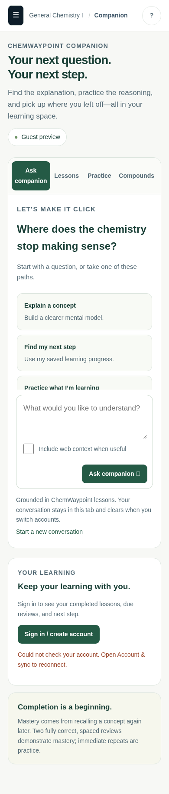
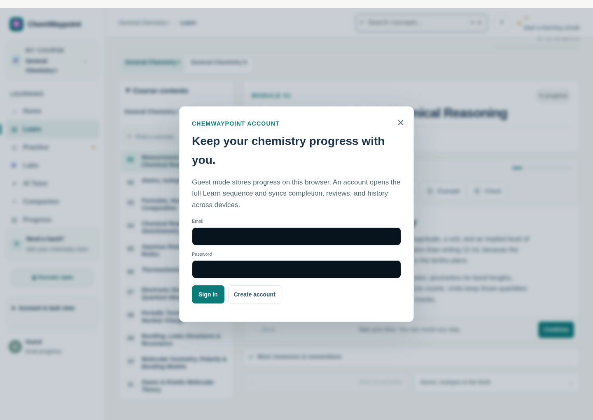
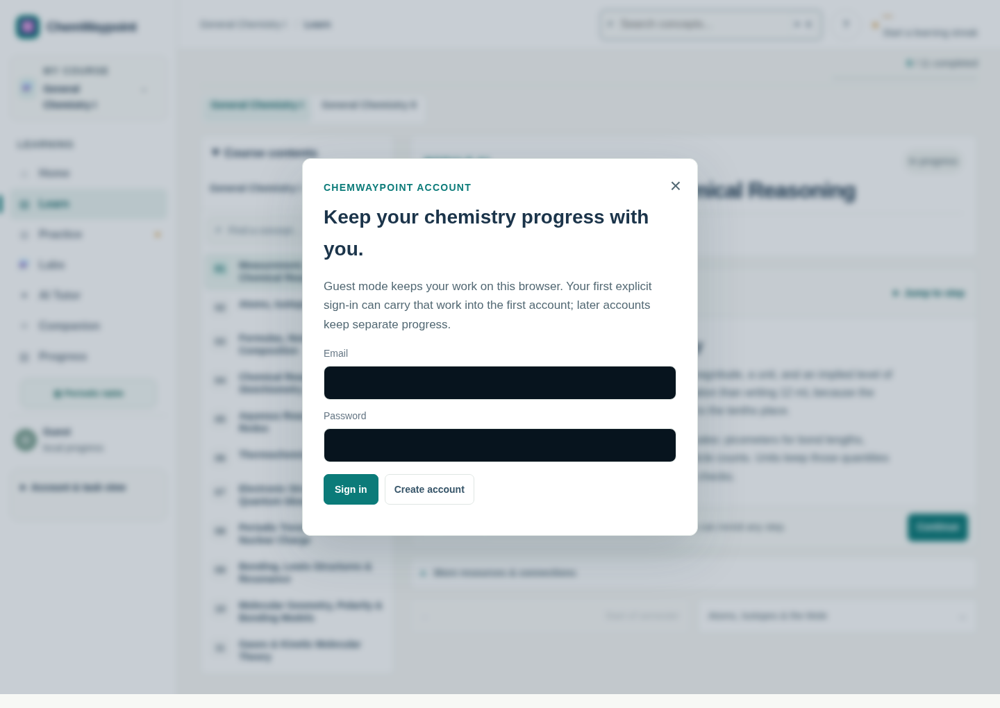
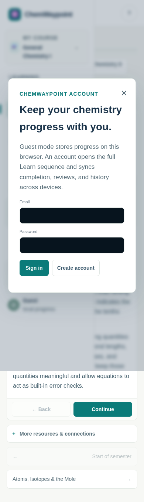
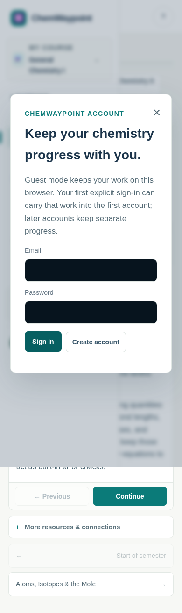
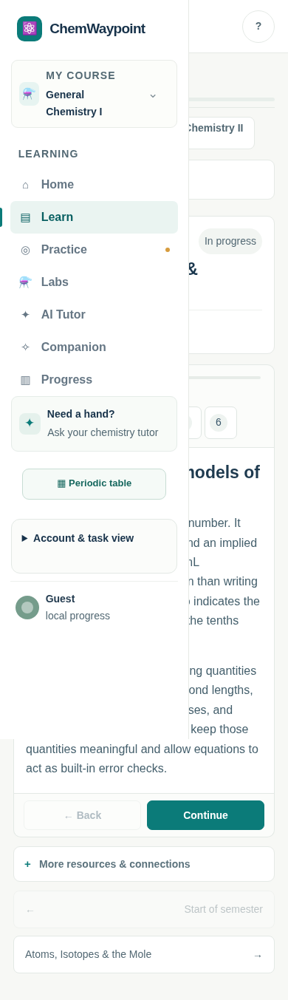
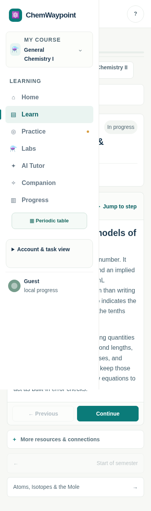
Baseline navigation wrote a completion labelled with an empty array, with no assessment events. After navigation creates neither completion nor a streak.